Unit 11 · Study guide · Korea
Korea Under Japanese Rule 일제강점기
Reform, protectorate, and thirty-five years as a colony, 1896–1945
ContentsOverview
The unit in one paragraph
pp. 400, 414
After the Sino-Japanese War ended in 1895, Korea had a short window to debate its future. Russia and Japan competed for influence, King Gojong declared himself emperor, and city intellectuals, men and women, built Korea's first civil society of clubs, schools, newspapers, and nationalist religions. Japan ended this window: it made Korea a protectorate in 1905 and a colony in 1910. Colonial rule passed through three phases: a military police state (1910–1919), a looser "cultural government" after the March First Movement (1919–1931), and wartime exploitation and forced assimilation (1931–1945). Japan built railroads and factories, Korean landlords and businessmen prospered, and modern schools, women's journals, novels, films, and radio appeared. Tenant farmers grew poorer, millions were moved to work across the empire, and Koreans had no real voice in politics. Nationalists split over how to win independence: by fighting, by educating, or by persuading foreign powers. Those splits, between left and right and between rich and poor, outlasted Japanese rule.
- Should we focus on how people suffered under Japanese oppression, or on progress in the economy, education, women's opportunities, and mass culture?
- Who did the right thing: anti-Japanese guerrilla fighters (often communists), cultural nationalists who educated the masses over the long term, or exiles in the United States who lobbied Western nations?
- How should collaborators, the Korean landlords and businessmen who prospered under Japan and backed its late-1930s effort to erase Korean language and culture, be judged?
Timeline at a glance
Between Russia and Japan
pp. 400–401
Competition between Russia and Japan gave Koreans room to push for reform, nationalism, and modern organizations, but it also brought demands for concessions from both sides. In the end the "court of world opinion" sided with Japan. p. 400
Russia moves in p. 401
Russia's development of Siberia gave it a short border with northeastern Korea. In 1896 it began the Chinese Eastern Railway across Manchuria, and in 1897 it took a twenty-five-year lease on Port Arthur (Dalian) on the Liaodong peninsula, the same land it had forced Japan to give up in 1895. Japan could only watch.
In 1896 King Gojong escaped Japanese control in his palace and fled to the Russian legation. Two Russian–Japanese agreements gave Russia equal rights to station guards and lend money to Korea; Russian influence spread over the north, Japan's over the south. A secret agreement promised Gojong Russian protection and aid.
Short of money for indemnities and his government, Gojong leased out concessions in return for loans:
- lumber to the Russians,
- gold mines to the Americans,
- railroad building to the Japanese and others.
Back in his palace in 1897, he renamed his kingdom the Great Empire of Korea and took the title of emperor, putting himself on a par with the rulers of China, Russia, and Japan.
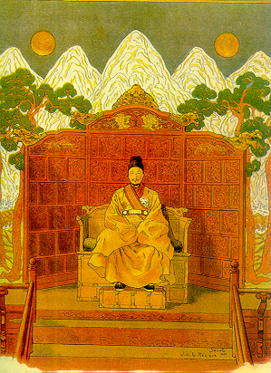
Nationalism and civil society
pp. 401–403
Anger at the king's sale of national resources produced Korea's first openly nationalist movements, as Koreans looked for a national identity fit for the modern age. When Gojong reached the Russian legation he dismissed the Gabo reform cabinet; a street mob killed reform ministers, and a conservative cabinet reversed the order to cut topknots. p. 401
The Independence Club p. 401
Outside the government, men from the secondary status groups filled the new Independence Club. It demanded that corrupt officials be dismissed, held street meetings and education sessions, and published The Independent in the vernacular and English. Its leaders gave speeches, opened branches in small towns, held mass meetings in Seoul, won seats on the king's council, and campaigned for an Independence Gate as a sign of liberation from subservience to China.
- Seo Jaepil, a U.S. citizen who came back to Korea,
- Rhee Syngman, educated at the Baejae Christian missionary school,
- Yun Chiho, who visited Japan and studied in the United States.
In the spirit of American progressivism, they looked down on Korea's heritage while calling for a truly independent nation. The Club was banned after two years.
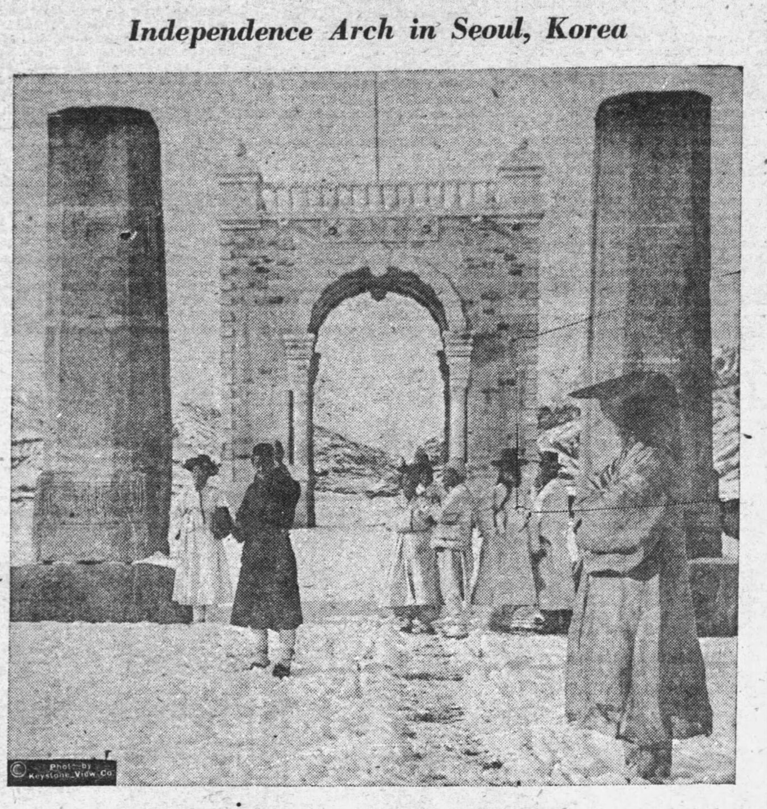
Women take public action p. 401
The Club inspired elite women to debate sexual equality and women's education as part of Korean nationalism. For the first time, women acted in public.
Organizations outside the government pp. 401–402
One sign of a modern civil society is groups pursuing political goals outside the government.
Korea Preservation Society (1904)
Opposed Japan's attempt to turn state land into private land for sale to Japanese developers.
Society for the Study of Constitutional Government
Called for institutional change to meet Korea's challenges. When it was outlawed, it came back as the Korea Self-Strengthening Society, promoting economic growth and education.
Newspapers
Rallied to independence, especially after the Russo-Japanese War, by publicizing Japanese aggression until censorship shut them. Even the way they were closed raised political awareness.
New religions and modern culture pp. 402–403
In 1905 the Donghak movement became the Religion of the Heavenly Way. Its third patriarch, Son Byeonghui, returned from exile in Japan to form the Progressive Party, which recruited farmers as well as city people.
Unity and Progress Society
Under Song Byeongjun it wanted Japan to lead Korea's reform and volunteered to help Japanese forces in the Russo-Japanese War. This collaboration split it from the Progressive Party.
Daejonggyo
A new religion with nationalist overtones that worshipped the ancestor of the Korean race.
Schools and letters
At least 2,250 private academies taught practical Western learning, and became places for patriotic debate. Scholars turned from Chinese to Korean language, history, and literature. The "new novel" and patriotic songs set to hymns spread nationalist ideas.
Louise Yim's writings on female independence
Louise Yim (Im Yeongsin) was tortured for resisting Japanese rule, earned two degrees at the University of Southern California, and later sat in the South Korean National Assembly. In her memoir:
- As a girl she listened outside the boys' school her father had started, then asked the teacher whether a girl could learn to read and write. He told her to come anytime.
- At twelve (1912), amid rumors that Korean girls would be forced to marry Japanese, parents rushed to marry off their daughters. When matchmakers came for her, she lectured them that forcing marriage on a girl too young to understand it was a crime. "Her blood is wild," one said.
- In high school (c. 1916) she concluded that men who shut women out of national life knew nothing about women: apart from physical differences and childbearing, "a woman thinks of all the things a man does."
Source: Louise Yim, My Forty Year Fight for Korea (Chungang University, 1964), pp. 27, 39, 56, as excerpted on p. 402. The book's questions are in the Review kit.
From protectorate to colony
pp. 403–404
For years Russia and Japan competed for concessions inside Korea. Unit 10 told this story from Japan's side; here is how it looked from Korea. p. 403
- 11901–1902. Japan plans railways from Busan to Seoul and on to Uiju on the Manchurian border; Russia tries to expand its leasehold around the Yalu River. Japan allies with Britain (1902), which keeps Germany and France from backing Russia.
- 2February 1904. Korea's last-minute plea for neutrality fails. The Russo-Japanese War begins, Japan occupies Seoul, and Japanese advisers are placed in every Korean ministry.
- 31905. Russia withdraws. Britain, extending its alliance, and the United States let Japan do as it saw fit in Korea.
- 4November 1905. The Eulsa protectorate treaty. Gojong and several ministers refuse to sign, but Itō Hirobumi declares that a majority approved it. Min Yeong-hwan, the dead queen's nephew, commits suicide in protest.
- 51906–1907. Itō heads the residency general. He plans an "independent" Korea that reforms itself under Japanese guidance, keeps Gojong as a figurehead, and keeps order with Japanese police and troops.
- 61907. Gojong secretly appeals to European rulers and sends a mission to the Hague peace conference. Itō dethrones him in favor of his son. Officials kill themselves, riots break out, and merchants strike. The Korean army is dissolved, and discharged soldiers fight a four-year guerrilla war that costs thousands of lives.
- 71907–1909. On Itō's orders, the Korean Home Ministry takes charge of "peace preservation," bans freedom of association, and censors newspapers and books.
- 81909. Itō travels to Manchuria to win Russia's consent to annexation. The Korean patriot An Junggeun assassinates him in Harbin. The new resident general, Terauchi Masatake, silences all criticism.
- 9August 22, 1910. Korea becomes Japan's colony, as announced to Koreans on August 29.
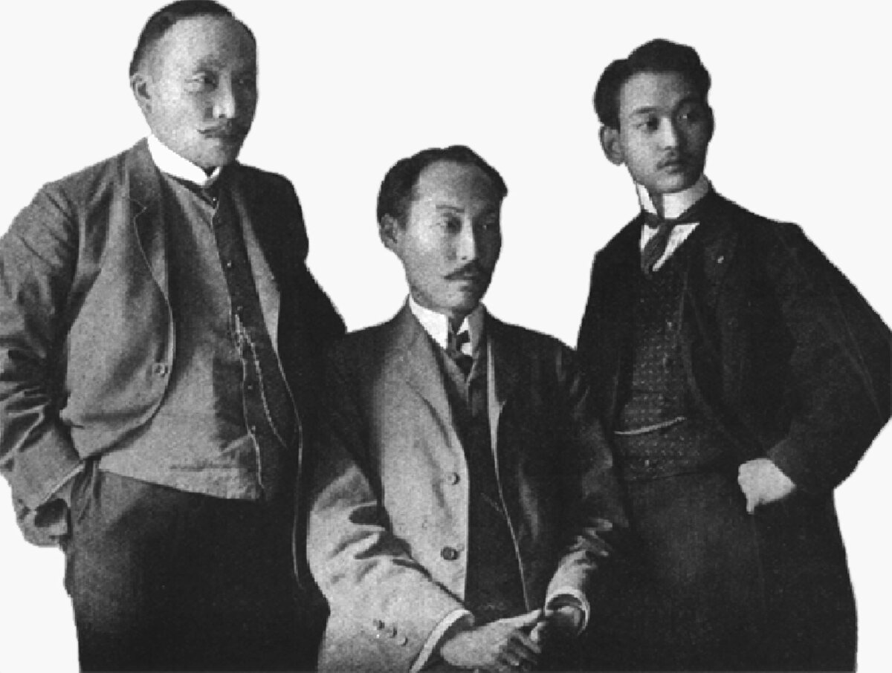
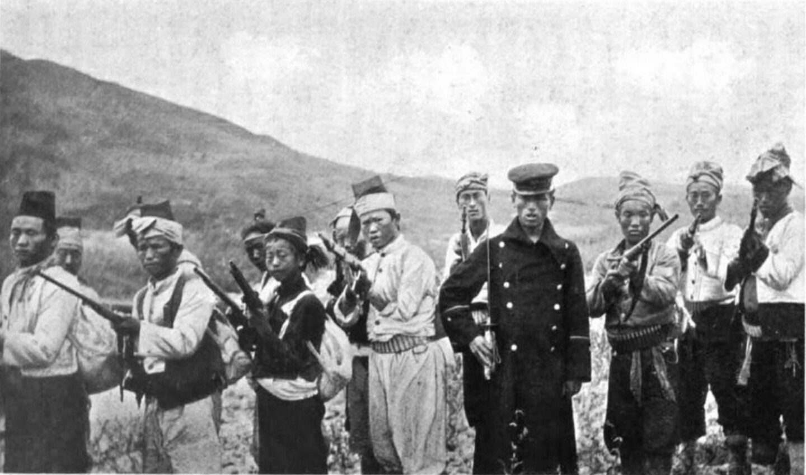
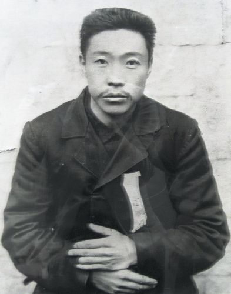
The Hague mission was refused because, as a protectorate, Korea had "ceased to exist." Under international law only "civilized" nations were sovereign. Japan claimed to have become one, and its public relations campaign made Korea look uncivilized. p. 403
Three phases of colonial rule
p. 404
Japan's rule over Korea was not one unbroken march to total control. It changed course twice. Pick a phase to see what defined it. pp. 404, 414
Phase 1: the military police state, 1910–1919 p. 404
The Government-General (GG) of Chōsen ended all Korean political participation, restricted Korean business, and invested heavily in rice for export to Japan. Police could levy fines, hold suspects for long periods, use violence on the spot, torture in interrogation, and flog people for minor offenses, though Japan had banned these measures at home in 1882.
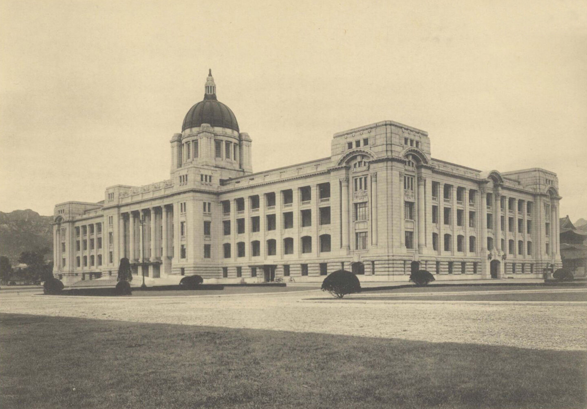
The March First Movement, 1919 p. 404
Nationalists first worked underground through Christian, new-religion, and Buddhist groups, since Japan avoided persecuting Christianity for fear of offending the West. Inspired by U.S. President Woodrow Wilson's call for self-determination after World War I, thirty-three patriots signed a Declaration of Independence on March 1, 1919, and marched peacefully to petition the Japanese authorities. They expected Western support. Unlike the earlier clubs, the movement drew people from all walks of life and every region: national consciousness had spread.
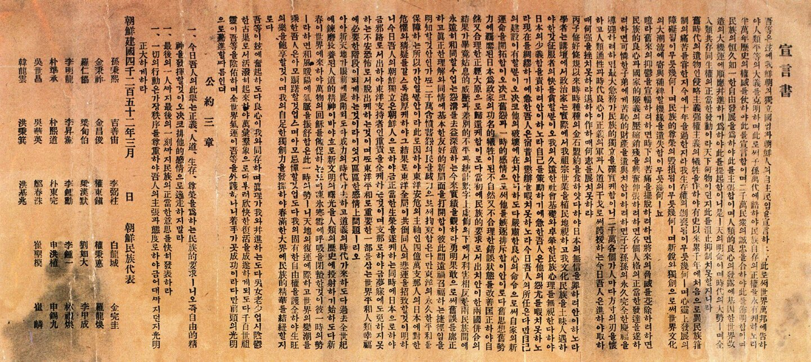
First with repression: mass arrests and public executions of nonviolent demonstrators. Then with a shift to "cultural government", which allowed some freedom of speech and association and Korean-owned businesses. pp. 404–405
Phase 2: cultural government, 1919–1931
Some freedom of speech, association, and business, lasting until the Manchurian Incident of 1931, when Japan's army in Manchuria overthrew the Chinese governor and set up the puppet state of Manchukuo.
Phase 3: war and assimilation, 1931–1945
Huge investment in heavy industry and infrastructure to supply Japan's wars, and repression of the 1920s freedoms. After 1937: conscription, forced labor, and assimilation. Koreans had to use Japanese, worship the emperor at Shinto shrines, and take Japanese names.
How scholars judge the colonial period p. 404
- Tyranny and economic exploitation
- Most people reduced to bare subsistence
- Modern industry held back
- An attempt to wipe out Korean culture without equal citizenship
- Inherited status abolished; women freed from male domination
- Mass education for both sexes; mass media and popular culture
- Railroads, bridges, harbors; a modern financial sector (1920s); industry (1930s)
- A small middle class; half a million farmers became factory workers and miners
In hindsight, the book argues, the most important contribution was Japan's developmentalism: state-led industrialization with planning and controls of every kind, meant to catch up with the West. Far from the free-market capitalism of Britain and the United States, it showed some Koreans that economic development was possible without liberal democracy. p. 404
Rural Korea
pp. 405–406
Colonial policy aimed to grow more rice for export to Japan through land reclamation, irrigation, chemical fertilizer, and new seeds. p. 405
The land registration program, 1911 p. 405
To collect an efficient land tax, the GG recorded the owner of every piece of land.
Korean nationalists and scholars call the land registration program a sham to move land from Korean to Japanese hands by force or trickery.
Joseon law had never clearly defined ownership. Tenure was insecure because judges were yangban magistrates who favored landlords; deeds and registries existed, but not every owner had them; and owners had dodged registration to avoid taxes, starving the state of revenue.
At first, the program did not move much land into Japanese hands. A boom from 1910 to 1925 raised rice prices. Landlords, mostly yangban, did far better than sharecroppers, who gave at least half of each harvest to the landlord. Japan won the landlords over with noble titles and guaranteed property rights, so they took little part in resistance. p. 405
After 1929: depression pp. 405–406
Farmers who owned some land and rented more made a reasonable living; tenants did not. Rice exports to Japan cut Korean rice eating, and Manchurian millet was a poor substitute. p. 406
- 11924. The Joseon Labor-Farmer General Alliance backs tenant disputes and class struggle; farmers later leave to form their own General Korean Farmer Alliance. Middling farmers, not the poorest, lead disputes, demanding sharecropping fees cut from 50 to 40 percent or less. Most disputes before 1925 end well for tenants.
- 21933. The Tenancy Mediation Law sends tenant disputes to court; many are settled in tenants' favor.
- 31934–1945. Japan stops promoting rice and farming declines. Farmers resist passively, breaking contracts or hiding crops.
- 4After Pearl Harbor (1941). The GG bans all tenant protest, and sharecroppers' resentment grows intense.
Korean industry
pp. 406–407
Korean business in the 1920s p. 406
Large landlords started small enterprises with little capital. The best known is the Gyeongseong Textile Corporation of Kim Yeonsu and Kim Seongsu, a landlord family from Jeolla province.
- 1Capital came from tenant rents.
- 2Rescue: facing bankruptcy, the Kims borrowed working capital from Japanese banks; Japanese trading companies helped them sell.
- 3Protection: the GG invited them to economic policy councils and left them the cheap-textile niche while Japanese firms made pricier goods.
Most other Korean firms, in dyeing, paper, leather, ceramics, milling, and brewing, were small and undercapitalized. Rubber was an exception: by 1930 Korean rubber factories outnumbered Japanese ones thirty to seventeen. Apart from cheap textiles, food processing was the main Korean-owned industry, and most Korean metal factories were little more than blacksmiths' shops. p. 406
Japanese capital and the 1930s pp. 406–407
Japanese investment dwarfed Korean capital: Japan Steel at Songrim, Japan Mining at Chinnampo, and zaibatsu firms such as Mitsui's Sansei Mining, Mitsubishi's Joseon Coal, and Noguchi's Joseon Nitrogen fertilizer company. Some argue Japan wanted raw materials and markets, but it invested more than it ever earned in profits because it put strategic and political goals first. In the 1930s it built Korea up to supply Manchukuo and the army there: a south-to-north trunk railroad into Manchuria (and China after 1937), hydroelectric plants on the Yalu River, and steel, chemical, and machine factories. Most weapons were still made in Japan, leaving repairs, vehicles, and ships to Korea. pp. 406–407
National capitalists or collaborators? p. 407
Gyeongseong set up textile plants in Manchuria, bought a plant in Nanjing after the 1937 Nanjing massacre, and called in Japanese police to break strikes. Pak Heungsik, financed by Japan's development bank, opened Korea's first department store, the Hwasin, and became one of the richest Koreans; Yi Byeongcheol went from a rice mill to the liquor business. After 1945 the Kim brothers were praised as "national capitalists" who put the nation above profit, yet the evidence shows they became full partners in Japanese imperialism. Korean businessmen could not have survived without cooperating, but they have recently been condemned as collaborators.
Japan did not aim to improve Korean welfare, yet Korea industrialized. Korean capitalists became the core of a new middle class, factory jobs drew farmers to the cities, and Korea took on the features of an advanced industrial economy, "with most Koreans as the underclass." p. 407
Education, women, and mass culture
pp. 407–408
Schools with limits p. 407
The liberalization of the 1920s came with restrictions. Korean-language newspapers, magazines, and books were allowed, but all passed Japanese censors.
- Primary schooling expanded, but compulsory education covered only the first few grades and Korean private schools were limited.
- One university: Keijō Imperial University in Seoul, one-third Korean. Only a few well-to-do Koreans could attend it or colleges in Japan.
- Though it preached assimilation, the GG ran separate, better schools for Japanese children in Korea.
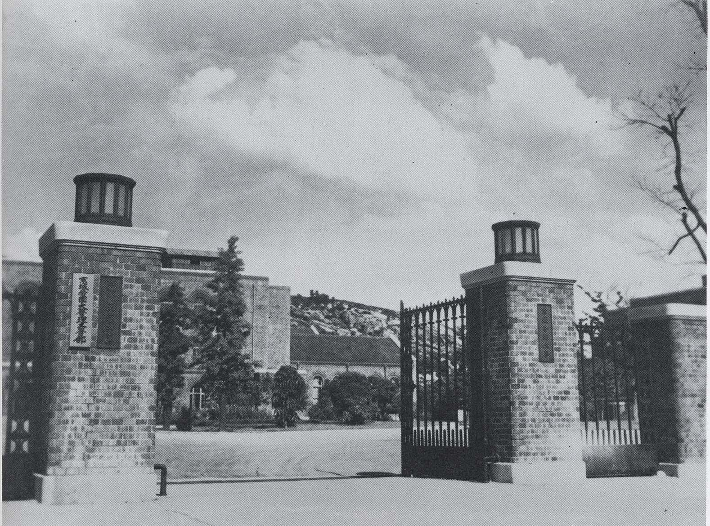
Women pp. 407–408
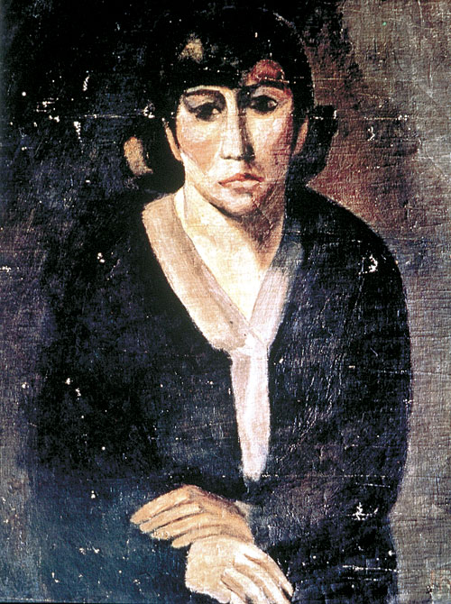
Modernity opened doors for women. Urban women spread new standards of hygiene in the countryside and ran night schools for the illiterate in churches and villages. They founded the Pine and Bamboo Society (1910) to foster national consciousness; Buddhist women formed an association in 1920. Helen Kim, the first person to earn a doctorate in Korean history (Columbia, 1929), toured rural areas with other Ewha School women until police stopped them, and with Kim Pilye founded the Korean YWCA (1922). Women trained as nurses, Korea's first women's medical school opened in 1928, the GG hired women clerks, and private industry hired women for factories.
Women found a public voice in two journals of the 1920s, Kim Wonju's The New Woman and Na Hyeseok's Women's World. From 1924 socialist and non-socialist women's groups demanded an end to early marriage, female slavery, licensed prostitution, and unequal pay. p. 408
| Year | Law | What it did |
|---|---|---|
| 1912 | Civil code | Confirmed tradition: men inherit family headship and property, and only men can start a divorce. |
| 1918 | Divorce petition | Women may petition for divorce, but only with both husband's and parents' approval. |
| 1922 | Marriage ordinance | Minimum marriage age for women raised to 15; polygamy and concubinage banned; women may divorce for polygamy, adultery, crime, insult, or three years' abandonment. |
These laws did not end discrimination against women in practice (p. 408).
Literature, film, and radio p. 408
Literature in everyday Korean flourished with support from the nationalists' New Culture Movement. Kim Seongsu of Gyeongseong also founded the East Asia Daily and Boseong Normal School (later Goryeo University).
| Who | Work | About |
|---|---|---|
| Yi Gwangsu | Heartless (1917), the first modern Korean novel; Rebirth, Earth | Influenced by Tolstoy |
| Hyeon Jingeon | Stories and novels; a novel on a Baekje general who fought Tang armies was banned | Suffering of ordinary people under custom and colonial rule |
| Kim Dongin | Founded Creation magazine (1919) | Slum dwellers; the life of a shaman |
| Yi Hyoseok | Member of KAPF, 1928–1932, then left socialism | Itinerant peddlers; alienation of city life |
| Yi Sang | "Wings" (1936), stream-of-consciousness story | A husband who shuts his mind to his wife's prostitution |
| Na Ungyu | Films Arirang (1926), Searching for Love (1928) | Landlords' oppression of farmers; evils of Japanese imperialism |
The song "Arirang," linked to the film, tells of partings: lovers kept apart by a hill, workers drafted to rebuild Gyeongbok Palace, Koreans separated from their nation. Radio, begun in 1927 under the Japanese Korean Broadcasting Company, taught Korean history, science, and hangul, and the GG tolerated Korean-language programs even after banning Korean in public in 1938. Newspapers, magazines, films, and radio carried the tastes of a tiny urban middle class to a wider public: a consumer culture had arrived. p. 408
Militant nationalism
pp. 408–409
Colonial rule pushed Koreans to debate what the nation was. Some intellectuals saw in Korea's past only a sad history of political and cultural subservience to China. Students radicalized in Japan came home to form socialist study groups. Militant nationalists saw the colonial era in black and white: one was either a patriot ready to die for liberation or a collaborator who got rich as a landlord or businessman. Struggle would "kill two birds with one stone," overthrowing both the Japanese and Korean capitalists and landlords, and would cure Korea's long habit of submission to China. pp. 408–409
The GG eased the harshness of its first decade but added police and surveillance, and tried to steer would-be militants into harmless educational and cultural projects. p. 409
The Korean Provisional Government p. 409
In April 1919, exiles in Shanghai formed the Korean Provisional Government (KPG) with a provisional assembly, which wrote a constitution for a Great Korean People's Republic. Its first leaders combined right and left, and soon split:
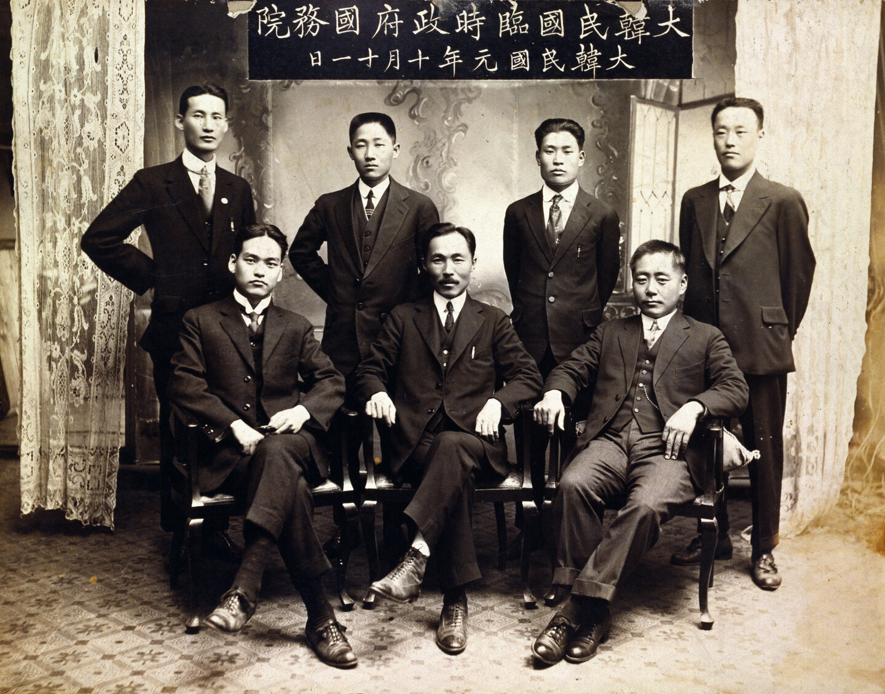
President (chosen 1922). Preferred diplomacy to persuade the United States and other powers to back independence. Went to work in the United States.
Prime minister. A guerrilla commander in 1907 who later joined the Communist Party in Vladivostok. Favored armed struggle; left Shanghai in disgust for Manchuria.
Three answers to Japanese rule
Terror: the anarchists
About fifty anarchists formed the Uiyeoldan (Righteous Brotherhood, 1919–1924), which carried out at least three hundred acts of violence; after failed assassinations, Japanese police wiped out its members. Sin Chaeho founded the Anarchist Black Youth League (1921–1924). p. 409
Education: the cultural nationalists
Yi Gwangsu, Yun Chiho, and others thought Koreans lacked national consciousness and needed education before a real movement could form. Yi's slogan was "Reconstruction!" These cultural nationalists put independence off into the indefinite future. pp. 409
Diplomacy: the exiles abroad
Rhee Syngman spent two decades in the United States seeking support. An Changho founded the Corps for Promoting Scholars in Los Angeles (1911), joined the KPG, and was arrested in Shanghai in 1932. pp. 409, 412
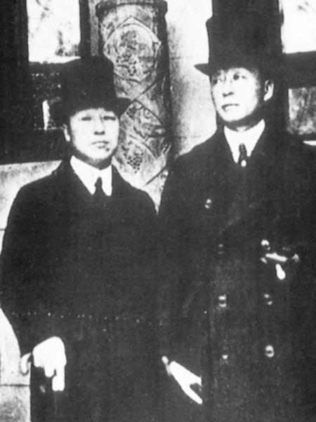
Two Independence Club leaders of the 1890s (Part 2) became the diplomatic wing abroad. Communists and radical nationalists called the cultural nationalists "nothing better than outright collaboration" (p. 409). Rhee would become South Korea's first president, a story for Unit 16.
The rise of communism
pp. 409–410
Communists and radical nationalists drew on a new awareness of Korea's long subordination to Chinese dynasties and culture, especially the Confucian justification of tributary relations. Writers like Sin Chaeho began a new kind of history that celebrated militant resistance in the Goguryeo dynasty and Korea's military heroes. p. 409
Why Marxism–Leninism appealed p. 409
- 1Capitalism reaches its last stage, monopoly capitalism, when big firms dominate.
- 2Home markets fill up, so core capitalist states seize colonies around the globe for cheap raw materials and markets for their goods. This is Lenin's explanation of imperialism.
- 3Korea fits the pattern: its plight is part of a universal history, not a special failing.
- 4So one struggle wins two goals: fighting Japan would overthrow capitalism and liberate the nation at once.
In practice, the Soviet Union was the only country giving money and moral support to Korean and other national liberation movements. p. 409
Parties and the united front pp. 409–410
The Comintern pushed the same united front in China, where Chiang Kaishek turned on his communist allies in 1927, a couple of months after the New Root Society formed (Unit 13).
Manchuria
pp. 406, 410–412
The GG encouraged Koreans to move to northeastern Manchuria to ease rural distress and extend Japan's reach. There, unlike Chinese farmers, Koreans could borrow from Japanese banks, buy land on good terms, and form cooperatives; Japanese officials protected them in disputes as long as they kept colonial passports rather than becoming Chinese citizens, which let them keep a Korean identity. In southern Manchuria they could not own property or even work. In Chinese eyes, they were Japan's agents. p. 406
In the 1920s the GG let Koreans govern themselves through the Korean Association, which about 84 percent of Korean residents joined. It ran poor relief, cemeteries, disease control, farming lessons, irrigation, schools, and a Financial Association (loans to rich landlords) and Mutual Aid Association (small loans to tenants). It served Japan, but it also covered for leaders who backed anti-Japanese activity. p. 410
Where resistance moved
Kim Il Sung and the guerrillas pp. 410–412
- 11919–1921. Resistance fighters start in Manchuria, are chased into the Soviet Maritime Province, and fight beside the Red Army against Japan's Siberian expedition until the 1921 Soviet–Japanese peace.
- 2After 1932. Kim Il Sung, future leader of North Korea, forms an eighteen-man guerrilla unit in northern Manchuria. Jiandao, 76 percent Korean, becomes the center of anti-Japanese activity; in 1934 nine hundred men of the Second Division of the Northeast People's Revolutionary Army fight hundreds of engagements.
- 31934–1935. Crisis: Koreans tired of radical reform form self-defense leagues against "bandits," and Chinese communists, insisting Koreans fight only for China, purge 500 to 2,000 Korean communists as supposed Japanese spies. General Wei Zhengmin halts the purge in March 1935, possibly persuaded by his friend Kim Il Sung.
- 4June 4, 1937. Kim chooses to keep his men inside a Chinese unit, the safer course though he was later criticized for bowing to Chinese interests. He raids Bocheonbo just south of the Yalu, holds it a day, beats a pursuing police force, and then attacks the Yokoyama timber camp. Japan takes bloody reprisals; Kim wins a name for daring.
- 51937–1940s. After skirmishes, Japan wipes out the Chinese communist armies in Manchuria and forces Kim across into Russian territory, becoming a major in the Soviet 88th Division near Vladivostok.
Kim San, communist revolutionary (1905–?)
Kim San was the pseudonym of Jang Jirak, one of many patriots who became communists to fight for Korea's liberation, and who found it easier to fight Japan from inside the Chinese movement.
- 1905–1912 Born to poor farmers near Pyeongyang. At seven he watched Japanese police beat his mother for reporting late for a vaccination. His mother raised him a Christian; his harsh father turned him against Confucianism.
- 1919 Left Christian middle school at fourteen to join the March First Movement. Seeing Christians pray while police killed unarmed civilians, he gave up Christianity, God, and nonviolence.
- 1919–1925 Studied in Tokyo among anarchists and Marxists; three months at a nationalist military school in Manchuria; Shanghai (1920), then Beijing's Union Medical College (1921), Marxist study, and the Korean Communist Youth Organization.
- 1925–1928 Joined the Chinese Nationalists in Canton; after Chiang Kaishek's 1927 massacre, joined the communist Canton commune and fled to the Hailufeng Soviet, escaping through mountains with malaria and tuberculosis.
- 1930s Secretary of the Beijing Communist Party; arrested in Manchuria (1932) and water-tortured for forty days; accused by comrades of "leftist" then "rightist" deviation; briefly held by the Nationalists (1933).
- 1937 Reached Mao's base at Yan'an, where Helen Foster Snow recorded his life. Neither he nor his family was heard of again.
"My whole life has been a series of failures, and the history of my country has been a history of failure. I have had only one victory—over myself."Nym Wales (Helen Foster Snow), Song of Ariran (1941), p. 315, quoted on p. 411
Korea in the Asia-Pacific War
pp. 404, 411–413
After Japan went to war with China in 1937, it turned to Korea for support. p. 411
Mobilizing people
- Forced labor in mines and factories in Japan and Manchuria.
- Young men recruited, then conscripted, into the Japanese army.
- Thousands of women abducted or lured with false job offers and forced to become "comfort women" for Japanese troops in China, Manchuria, the South Sea islands, and Southeast Asia.
- Some young men fled to the hills; most were trapped.
Erasing identity
- Japanese language required; Korean banned in public (1938).
- Worship of the emperor at Shinto shrines.
- Japanese names.
- As bombs hit Japan's own industry late in the war, new factories went up in Manchuria and northern Korea, and Korean manufacturers profited, earning their compatriots' anger.
Not all Koreans resisted. Park Chung-hee, South Korea's dictator from 1961 to 1979, graduated from a military academy in Japan and served as a Japanese officer in Manchuria against opponents of Japanese rule, including Korean guerrillas. Exiles kept fighting outside Japanese territory: Kim Il Sung in the Soviet army, communists in the Korean Volunteer Corps or with Mao in Yan'an, and noncommunists such as Kim Gu with the Chinese Nationalists. Neither side won Korea's independence, and they did not agree on Korea's future. pp. 411–412
Material culture: a colonial gold mine p. 413
Japan opened mines in Korea and Manchuria for its factories. Rather than buy machinery or develop new techniques, it relied on labor intensification: "pickaxes, not bulldozers; manpower, not trucks." The textbook's photograph of an alluvial gold mine in South Jeolla in the 1930s shows the hierarchy.
Korean miners earned less than Japanese for the same work, and conditions were so harsh that many hid or fled to the hills to avoid being drafted into the mines. p. 413
A minnow between two whales
p. 414
"Korea is like a minnow caught between two whales." The mainland whale was China before 1895 and Russia after; Japan swallowed Korea in 1910. Meanwhile the king tried to placate the whales, and city intellectuals, many educated abroad, built a civil society that taught Korean rather than Chinese history and imagined a future of equality and rationality. Japan's course was not fixed in advance: a guided "independent" protectorate, then a police state, then "cultural" policy, then, after the Fifteen Year War began in 1931, brutal exploitation.
- Models of successful Korean enterprise
- Upward mobility as hereditary status barriers fell
- Modern education in science, languages, and social science
- Modern mass culture; women working and writing in public
- Millions moved to factories and mines across the empire
- No meaningful political participation
- A widening gap between industrialists and landlords and a new working class and tenant mass
- Schooling never at Japan's own level
"Japanese colonialism produced wealth and poverty, acceptance and hatred, revolutionary potential and conservative reaction." Sharpened by U.S.–Soviet hostility, these divisions tore Korea apart after 1945 (Ch. 28, Unit 16). The war years return in Unit 14. p. 414
Test yourself
Flashcards
Who's who
| Person | Why they matter |
|---|---|
| Gojong | King, then emperor (1897); fled to the Russian legation (1896); refused the Eulsa treaty; sent the Hague mission; dethroned 1907 |
| Seo Jaepil · Yun Chiho | Independence Club leaders educated in the United States |
| Rhee Syngman | Independence Club; KPG president (1922); two decades lobbying in the United States |
| Esther Park | Korea's first woman doctor (1900) |
| Louise Yim | Patriot and memoirist of women's independence (Documents) |
| Son Byeonghui | Third patriarch of Donghak/Cheondogyo; Progressive Party |
| Song Byeongjun | Unity and Progress Society; collaborated with Japan in 1904–05 |
| Itō Hirobumi | Forced the Eulsa treaty; first resident general; killed 1909 |
| An Junggeun | Patriot who assassinated Itō in Harbin (1909) |
| Terauchi Masatake | Resident general who silenced critics before annexation |
| Kim Yeonsu · Kim Seongsu | Gyeongseong Textile; "national capitalists"; Kim Seongsu also founded the East Asia Daily |
| Pak Heungsik | Founded the Hwasin, Korea's first department store |
| Helen Kim | First doctorate in Korean history (1929); co-founded the Korean YWCA |
| Na Hyeseok · Kim Wonju | Founded the women's journals Women's World and The New Woman |
| Yi Gwangsu | Heartless (1917); cultural nationalist ("Reconstruction!") |
| Na Ungyu | Director of Arirang (1926) |
| Yi Donghwi | Guerrilla commander and communist; KPG prime minister; favored armed struggle |
| Sin Chaeho | Anarchist; historian of Korean militancy |
| An Changho | Corps for Promoting Scholars (Los Angeles, 1911); KPG; arrested 1932 |
| Kim Il Sung | Guerrilla leader in Manchuria; Bocheonbo raid (1937); Soviet army major; future North Korean leader |
| Kim San | Korean revolutionary in the Chinese communist movement (Biography) |
| Kim Gu | Noncommunist nationalist who fought with the Chinese Nationalists |
| Park Chung-hee | Japanese army officer in Manchuria; later South Korea's dictator (1961–79) |
Key dates
| 1896 · 1897 | Gojong to the Russian legation; Independence Club · Great Empire of Korea |
| 1898 · 1900 | Chanyanghoe · Esther Park begins practice |
| 1902 · 1904 | Anglo-Japanese Alliance · Russo-Japanese War; Japan occupies Seoul |
| 1905 | Eulsa protectorate treaty; Cheondogyo |
| 1907 | Hague mission; Gojong dethroned; army dissolved; guerrilla war |
| 1909 · 1910 | Itō assassinated · annexation (August 22) |
| 1911 · 1912 | Land registration · civil code |
| 1917 | Yi Gwangsu's Heartless |
| 1919 | March First Movement; KPG in Shanghai; cultural government; first Korean film |
| 1922 | Marriage ordinance; Korean YWCA; Rhee KPG president |
| 1924 · 1925 | Labor-Farmer General Alliance; socialist women's groups · Korean Communist Party |
| 1926 · 1927 | Arirang · New Root Society; radio begins |
| 1929 · 1930 | Gwangju student protest; Depression · New Root Society dissolved |
| 1931 · 1933 | Manchurian Incident · Tenancy Mediation Law; all-Korean radio station |
| 1934–1935 | Purge of Korean communists in Manchuria |
| 1935 · 1937 | Korean films banned · Bocheonbo raid; war with China |
| 1938 · 1941 | Korean banned in public · tenant protest banned after Pearl Harbor |
| 1942 · 1945 | 1.5 million Koreans in Manchuria · Japan defeated |
Discussion questions
Open each for points the reading gives you to work with. The first three are the chapter's opening questions; the later ones are the textbook's questions on its Documents and Biography features.
Should we focus on suffering under Japanese rule or on the progress made?
- Suffering: police brutality and flogging (p. 404), executions after March First (p. 405), tenant poverty and less rice (pp. 405–406), forced labor, conscription, and "comfort women" (p. 411), assimilation (p. 404).
- Progress: railroads, a financial sector, 15% industrial growth (pp. 404, 407), schools, women's journals and careers, films and radio (pp. 407–408).
- The book's answer is both: "wealth and poverty, acceptance and hatred" (p. 414). Ask who gained: landlords and businessmen, or tenants and workers.
Who did the right thing: guerrillas, cultural nationalists, or exiles in the United States?
- Guerrillas kept armed resistance alive (Bocheonbo, 1937) but were crushed and depended on Chinese and Soviet hosts (pp. 410–412).
- Cultural nationalists built literacy, schools, and literature but postponed independence and were called collaborators (pp. 408–409).
- Diplomats like Rhee relied on Western powers that had sided with Japan in 1905 and at The Hague (pp. 403, 409, 412).
- "Neither communists nor non-communists succeeded in obtaining Korea's independence" (p. 412).
How should collaborators be judged?
- Business could not survive without Japanese banks, markets, and protection (pp. 406–407).
- But Gyeongseong expanded with the empire, bought a Nanjing plant after the massacre, and used Japanese police against strikers (p. 407).
- Landlords were bought with titles and property rights and stayed out of resistance (p. 405). Compare Park Chung-hee's career (p. 412) with the "national capitalist" label (p. 407).
Why did Japan's policy change twice, and what stayed the same?
- March First forced the shift to "cultural government"; the Manchurian Incident and war with China brought mobilization (p. 404).
- Constant: no real Korean political participation, censorship, more police and surveillance even in the 1920s (pp. 407, 409, 414).
Documents: In Yim's recollections of her childhood, what stands out?
- Her courage in asking to learn to read in a boys' school, and the teacher's support (p. 402).
- Rumors of forced marriage to Japanese in 1912 shaped families' choices; colonial rule and patriarchy pressed on girls at the same time.
Documents: What did Yim criticize in her society, and what did she think of men?
- Forced early marriage and the rule that children must not question elders (p. 402).
- Men who exclude women from national and family life "know nothing about women"; women think about everything men do (p. 402). Compare the women's organizations of 1898–1907 (p. 401).
Biography: What motivated Kim San, and what did he have to give up?
- Motives: police violence against his mother, the massacre of March First demonstrators, Marxist study, and the chance to fight Japan from China (p. 411).
- Sacrifices: religion and nonviolence, his studies and health, safety (torture, arrests), and finally his life and family, who vanished after 1937.
Biography: What did Kim San achieve?
- By his own count, only "victory over myself" (p. 411).
- His story, recorded by Helen Foster Snow, shows how Korean revolutionaries were caught in China's revolution and its purges.
Key terms
Click to expand
Terms are grouped by topic. Where a term depends on another, the entry says what it builds on, so read those first. Hover or tap any dotted term in the text for a quick definition, or open ✎ at the bottom right. † marks a term or fact from outside the textbook. Terms from earlier units are repeated briefly where you need them.
From earlier units (review)
- Yangban YANG-bahn
- Korea's hereditary aristocracy, whose wealth rested on land. Yangban magistrates judged land cases in their own interest. Under Japan most landlords were yangban, given noble titles and property guarantees. p. 405; Unit 1
- Secondary status groups
- Korean status groups ranked below the yangban but above commoners, such as hereditary clerks and technical specialists†. Their men filled the Independence Club. p. 401; Unit 1Builds on: yangban
- Donghak
- "Eastern Learning," the new religion behind the 1894 rebellion. In 1905 it reorganized as Cheondogyo. p. 402; Unit 9
- Gabo reforms
- The reforms of 1894–1896 carried out under Japanese pressure. Gojong dismissed the Gabo cabinet in 1896, and its order to cut topknots was reversed. p. 401; Unit 9
- Concubinage
- A man keeping secondary wives (concubines) besides his wife. The Yeouhoe demanded its abolition in 1899; it was banned in 1922. pp. 401, 408
- Leasehold
- Territory a power rented from another state for a set term but controlled in practice, like Russia's twenty-five-year lease on Port Arthur (1897). p. 401; Unit 10
- Protectorate
- A country that keeps its own ruler while a stronger power controls its administration and foreign relations. Korea became Japan's protectorate in November 1905. p. 403; Unit 10
- Resident general
- Head of the residency general, Japan's government in protectorate Korea: Itō Hirobumi (1906–1909), then Terauchi Masatake. pp. 403–404; Unit 10Builds on: protectorate
- Zaibatsu
- Japan's "financial cliques," conglomerates of legally separate firms tied together by a bank and shared directors. Mitsui, Mitsubishi, and Sumitomo owned Korean mines. pp. 406–407; Unit 10
- Hangul
- The Korean alphabet, created in the fifteenth century. Colonial radio taught its use and the standardization of Korean grammar. p. 408; Unit 1
- Tributary relations
- The system in which Korean kings sent missions acknowledging the Chinese emperor's superiority, justified by Confucian ethics. Militant nationalists saw it as centuries of submission. p. 409; Unit 1
Reform and the loss of independence
- Concession
- A right granted to a foreign power or company, such as logging, mining, or railroad building, in return for loans. Gojong's concessions angered nationalists. p. 401
- Great Empire of Korea
- The name Gojong gave his kingdom in 1897 when he took the title of emperor, to stand equal with the rulers of China, Russia, and Japan. p. 401
- Civil society
- Clubs, associations, newspapers, and other organizations that pursue political or social goals outside the government. Their appearance after 1896 marked a modern civil society in Korea. pp. 401, 414
- Independence Club
- A reform club of 1896–1898 led by Seo Jaepil, Rhee Syngman, and Yun Chiho. It demanded dismissal of corrupt officials, held mass meetings, and won seats on the king's council before it was banned. p. 401Builds on: civil society
- The Independent
- The Independence Club's newspaper, written in the vernacular (everyday Korean, not classical Chinese) and in English. p. 401Builds on: Independence Club
- Independence Gate
- A gate in Seoul the Independence Club campaigned for, as a symbol of liberation from subservience to China. p. 401
- Cheondogyo CHEON-doh-gyo
- "Religion of the Heavenly Way," Donghak's new name from 1905, a fully organized religion supporting nationalist goals under Son Byeonghui. pp. 402–403Builds on: Donghak
- New novel
- A forerunner of modern Korean fiction whose heroes called for independence, social and gender equality, and reason in place of superstition. p. 403
- Eulsa treaty (1905)
- The November 1905 treaty that made Korea Japan's protectorate. Gojong and several ministers refused to sign; Itō declared that a majority approved. p. 403Builds on: protectorate
- Hague mission (1907)
- Gojong's secret mission, led by Homer Hulbert, to the Second International Peace Conference. It was refused because a protectorate did not exist as a state; Itō then dethroned Gojong. p. 403Builds on: protectorate, "civilized" nations
- "Civilized" nations
- The idea in international law of the time that only nations deemed civilized were sovereign. Japan claimed the status and painted Korea as uncivilized. p. 403
- Guerrilla war
- Fighting by small, irregular bands using raids and ambushes against a stronger army. Korea's discharged soldiers fought one from 1907 to about 1911; later guerrillas fought from Manchuria. pp. 403, 410
- Annexation
- Making a territory part of one's own state. Korea became Japan's colony on August 22, 1910. p. 404
Colonial government
- Government-General of Chōsen (GG) CHO-sehn
- Japan's colonial government of Korea ("Chōsen") from 1910. In its first decade it ran a police state; it later set economic, school, and press policy. p. 404Builds on: annexation
- March First Movement (1919)
- Peaceful nationwide demonstrations that began when thirty-three patriots signed a Declaration of Independence. People from every class and region joined. Japan answered with mass arrests and executions, then cultural government. p. 404Builds on: self-determination
- Self-determination
- U.S. President Woodrow Wilson's call, after World War I, for peoples under foreign rule to decide their own government. It inspired March First. p. 404
- Cultural government
- The policy of 1919–1931 that allowed some freedom of speech and association, Korean-language publishing under censorship, and Korean businesses, while police and surveillance grew. pp. 404, 407, 409Builds on: March First Movement
- Manchurian Incident (1931)
- The Japanese army in Manchuria's overthrow of the Chinese governor in 1931, which began the Fifteen Year War and Korea's third colonial phase. p. 404
- Puppet state
- A state that appears independent but is controlled by an outside power. p. 404
- Manchukuo
- The puppet state Japan set up in Manchuria after 1931. Korea's industry and railroads were built up to supply it. pp. 404, 407Builds on: Manchurian Incident, puppet state
- Assimilation
- Making a people give up their own identity to join the ruling one. After 1937 Koreans had to speak Japanese, worship the emperor at Shinto shrines, and take Japanese names. p. 404
- Developmentalism
- State-led industrialization through planning and controls, used by Japan to catch up with Western economies. It showed Koreans development without liberal democracy. p. 404
Land and economy
- Land registration program (1911)
- The GG's survey recording the owner of all land to collect a land tax. Nationalists call it a land grab; Japan said Joseon law had left ownership unclear. p. 405Builds on: Government-General
- Tenancy Mediation Law (1933)
- A law to settle tenant disputes in court; many were decided for tenants. p. 406Builds on: sharecroppers
- Gyeongseong Textile Corporation
- The textile firm of Kim Yeonsu and Kim Seongsu, funded by tenant rents and saved by Japanese banks. It expanded into Manchuria and China. pp. 406–407
- National capitalists
- The postwar label for Korean businessmen, like the Kim brothers, said to have put the nation above the profits of working with Japan. The evidence shows they were full partners in Japanese imperialism. p. 407Builds on: Gyeongseong Textile
- Collaborators
- Koreans who cooperated with Japanese rule and prospered, especially landlords and businessmen who backed Japan's late-1930s effort to erase Korean culture. Militant nationalists applied the label broadly. pp. 400, 407, 409
- Labor intensification
- Raising output by using more workers and harder work rather than machinery, as in Japan's colonial mines: "pickaxes, not bulldozers." p. 413
- Forced labor
- The wartime drafting of Koreans to work in mines and factories in Korea, Japan, and Manchuria. pp. 404, 411
Society and culture
- Keijō Imperial University
- The single university the GG founded in Seoul (Gyeongseong in Korean), part of Japan's imperial university system. Only a third of its students were Korean. p. 407
- Civil code (1912)
- The family law issued under Japan in 1912, confirming male succession to family headship, male ownership of property, and men's sole right to start a divorce. Changed in 1918 and 1922. p. 408
- New Culture Movement (Korea)
- A movement launched by Korean nationalists that supported literature in the language of ordinary Koreans. p. 408
- KAPF
- The Korean Art Proletarian Federation, a socialist movement in literature and film. Most members, like Yi Hyoseok, later gave up socialism. p. 408Builds on: proletariat
- Arirang
- The best-known Korean song, about partings, tied to Na Ungyu's 1926 film of the same name about farmers' oppression. p. 408
Nationalism and communism
- Militant nationalism
- The view that Korea needed struggle, not submission, and that one was either a patriot or a collaborator. It sought to overthrow Japanese rule and Korean capitalists and landlords together. pp. 408–409Builds on: collaborators
- Korean Provisional Government (KPG)
- The government in exile formed in Shanghai in 1919, with a constitution for a Great Korean People's Republic. Rhee Syngman was president, Yi Donghwi prime minister. p. 409
- Uiyeoldan WE-yeol-dan
- The "Righteous Brotherhood," an anarchist group that carried out at least three hundred acts of violence from 1919 to 1924 before police wiped it out. p. 409
- Cultural nationalists
- Nationalists such as Yi Gwangsu and Yun Chiho who believed Koreans needed education and national consciousness before independence, which they postponed indefinitely. p. 409
- Capitalism
- An economic system in which private owners invest capital in businesses for profit. Marxists saw it as a stage history would pass through. p. 409
- Monopoly capitalism
- In Lenin's theory, capitalism's last stage, when a few giant firms dominate and home markets are saturated. p. 409Builds on: capitalism
- Imperialism (Lenin's theory)
- Lenin's explanation of empire: states in the monopoly stage seize colonies for cheap raw materials and markets. It placed Korea in a universal history. p. 409Builds on: monopoly capitalism
- Comintern
- The Communist International, the Moscow headquarters that directed communist parties. Joining it meant following its orders. p. 409
- Proletariat
- The industrial working class. The Comintern held that Korea, still "feudal," lacked one. p. 410
- Bourgeois
- Middle class, especially owners of businesses and property. A "bourgeois-democratic revolution" was the stage the Comintern said had to come first. p. 410
- United front
- An alliance the Comintern ordered between communists and bourgeois nationalists against a common enemy, in Korea and in China. p. 410Builds on: Comintern, bourgeois
- New Root Society
- The united-front organization (1927–1930) that communists joined under Comintern pressure. It backed strikes and tenant disputes, turned moderate after 1929, and was dissolved in 1930. p. 410Builds on: united front
- Korean Association
- The GG-backed self-governing body for Koreans in Manchuria in the 1920s, providing welfare, schools, irrigation, and loans. It also sheltered anti-Japanese leaders. p. 410
- Jiandao
- An area in south Manchuria just north of the Yalu River where Koreans were 76 percent of the people; the center of anti-Japanese guerrilla activity in the 1930s. p. 410
- Bocheonbo raid (1937)
- Kim Il Sung's raid of June 4, 1937, on a town just south of the Yalu, the most successful guerrilla attack inside Korea. p. 410Builds on: guerrilla war
- "Comfort women"
- Women, many Korean, abducted or tricked with false job offers and forced into prostitution for Japanese troops across Asia during the war. p. 411
Sources and further reading
- Main text: Patricia Buckley Ebrey & Anne Walthall, Modern East Asia from 1600: A Cultural, Social, and Political History, 3rd ed. (Cengage, 2013), Ch. 23, "Modernizing Korea and Colonial Rule (1896–1945)," pp. 400–414, including Documents: "Louise Yim's Writings on Female Independence" (p. 402), Biography: "Kim San, Communist Revolutionary" (p. 411), and Material Culture: "A Colonial Gold Mine" (p. 413).
- Outside facts (marked †): the heading term 일제강점기 ("period of Japanese forced occupation"); the names of the three Hague envoys and the An Changho identification in Figure 14 (from the images' catalog records); the term "Righteous Army" for the post-1907 guerrillas; Na Hyeseok's work as a painter; the gloss of "secondary status groups." Image titles, dates, and makers come from each image's catalog record.
- Explore further: Wikipedia, "Korea under Japanese rule", "March 1st Movement", and "Independence Club", for background (follow the textbook where they differ); Nym Wales and Kim San, Song of Ariran (1941), the full life story behind the Biography.
- Books cited in the chapter: Louise Yim, My Forty Year Fight for Korea (Chungang University, 1964); Nym Wales, Song of Ariran (Rampart Press, 1941).
- Map data: coastlines from Natural Earth (public domain), via the world-atlas package.
Image credits
- Joseph de La Nézière, Gojong on his throne, lithograph, 1903: public domain, Wikimedia Commons.
- Keystone View Company, Independence Gate, Seoul, 1923: public domain, Wikimedia Commons.
- Hague Secret Emissary Affair: Yi Jun, Yi Sangseol, Yi Wijong, before 1908: public domain, Wikimedia Commons.
- F. A. McKenzie, company of Korean Righteous Army fighters, 1907: public domain, Wikimedia Commons.
- Portrait of An Junggeun, before 1910: public domain, Wikimedia Commons.
- The Proclamation of Korean Independence, 1919: public domain, Wikimedia Commons.
- Government-General building, from a Chōsen Exhibition photo album, 1929: public domain, Wikimedia Commons.
- Main gate of Keijō Imperial University: public domain, Wikimedia Commons.
- Na Hyeseok, self-portrait, c. 1928: public domain, Wikimedia Commons.
- Provisional Government of the Republic of Korea, October 11, 1919: public domain, Wikimedia Commons.
- Syngman Rhee and Philip Jaisohn in Washington, D.C., 1921: public domain, Wikimedia Commons.
- Figures 7, 10, 11, 16, and 17: drawn for this guide from the textbook's text.


Image titles and dates come from each image's catalog record, not from the textbook.